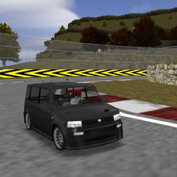
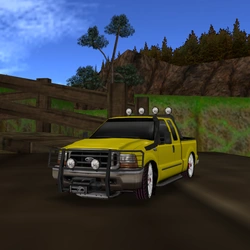

✖
☰
☰
Cars IV
☆ designates co-authors, ＋ designates add-ons
horizontal swipe or arrows <- -> for quick page nav
Cars IV
Tommy Kaira ZZII
Maserati MC12

Toyota bB
Opel Tigra
Tommy Kaira ZZIII
Clockwork Slug
☆Prestonfs

Ford F-250 Lowrider
Jeep Grand Cherokee 4x4
☆Manmountain
GTAVC Banshee
TVR Cerbera
Blitz ZZII
Aston Martin DB7